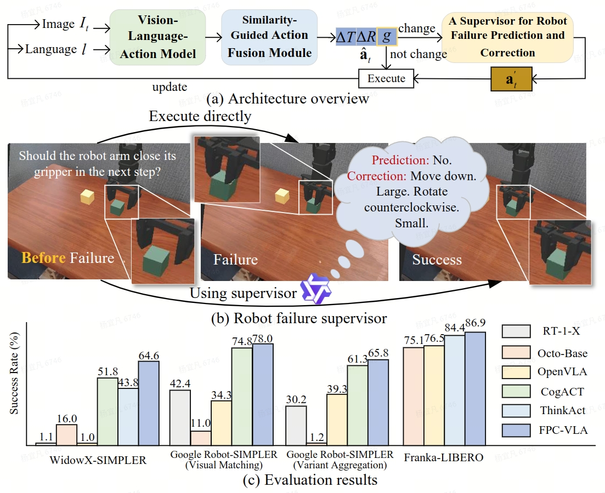

Robotic manipulation is a fundamental component of automation. However, traditional perception-planning pipelines often fall short in open-ended tasks due to limited flexibility, while the architecture of a single end-to-end Vision-Language-Action (VLA) offers promising capabilities but lacks crucial mechanisms for anticipating and recovering from failure. To address these challenges, we propose FPC-VLA, a dual-model framework that integrates VLA with a supervisor for failure prediction and correction. The supervisor is triggered at keyframes and evaluates action viability through structured vision–language queries. If a potential failure is detected, it generates natural language corrections specifying direction and magnitude of adjustment. Additionally, FPC-VLA includes a dual-stream action fusion module that refines outputs by aggregating historical action predictions, using cosine similarity and temporal decay to weight past pose and gripper states separately. We also introduce an automated pipeline to generate large-scale failure prediction and correction datasets from existing robotic data without manual labeling. Evaluation results on multiple simulation platforms (SIMPLER and LIBERO) and robot embodiments (WidowX, Google Robot, Franka) show that FPC-VLA outperforms state-of-the-art models. By activating the supervisor only at keyframes, our approach significantly increases task success rates with minimal impact on execution time. Successful real-world deployments confirm FPC-VLA's strong generalization and practical utility for building more reliable autonomous systems.